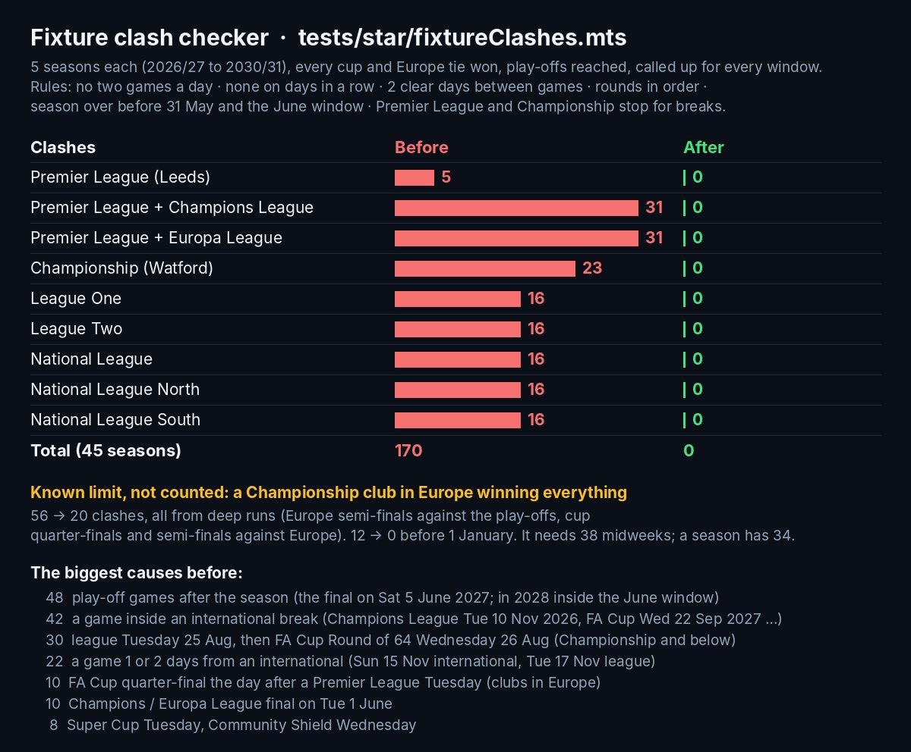
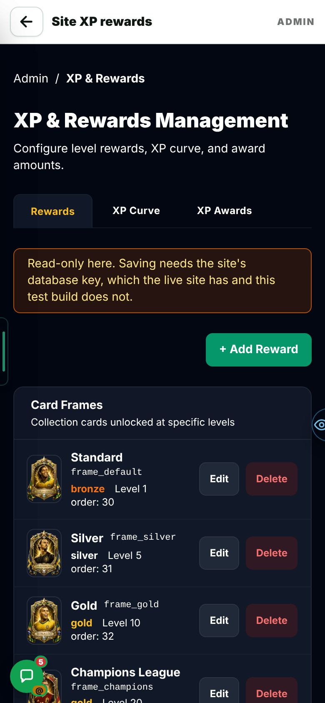
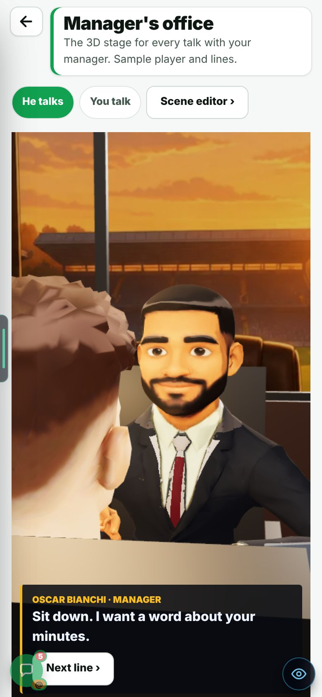
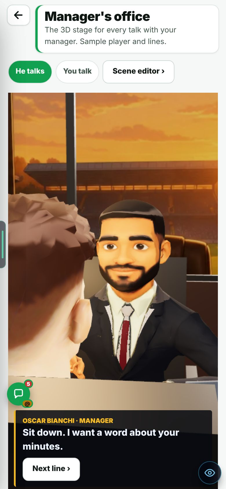
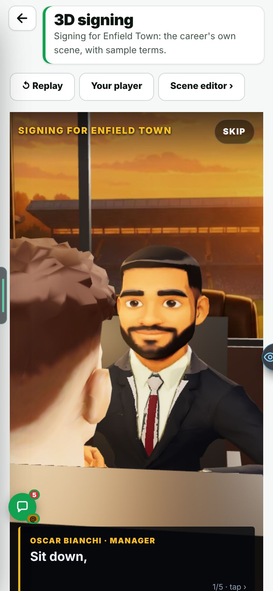

B13 · FIXTURES + ADMIN FIXES
Every fixture date was checked. 170 clashes are now 0. Four admin fixes came with it.
On the Harry branch, not live yet.
Overnight round, 20 Oct 2026. In Admin → Patch notes this is v0.78.
CHECK THESE
HOW THESE PATCH NOTES WORK
- One page per build. Open the one you want.
- Check these is the short list at the top. Look at each one in the game.
- Each change is Problem → Why → Fix, with its picture right under it.
- The tag says how sure we are: seen on a screen, measured as a number, reasoned from the code only, not seen.
- Needs your OK lists what waits on you. Then press Read and understood on the admin Patch notes page, so we know you read it.
This page is v0.78 in Admin → Patch notes.
FIXED
Harry, 20 Oct asked for a pass over all fixture dates, not only the FA Cup Round of 64. A new checker played 5 seasons through the real career code in every division. It found 170 clashes in 45 seasons.
Seven causes made most of them. They are in the bars below. The biggest was play-off games after the season (48).
- Championship-and-below Tuesday rounds moved.
- A midweek game inside a FIFA window moves to the Wednesday after.
- Premier League clubs in Europe play both domestic cups on their own fixed weekends.
- The European final week moves from 38 to 36.
- The play-offs are all in May.
- The Community Shield is the Saturday a week before the league.
- The squad is named 3 days before internationals. A club game up to 2 days after the last international is missed.
Clashes found by the checker. Grey is before. Green is after. Rules: no two games a day, none on days in a row, two clear days between games, rounds in order, the season over by 31 May, and the Premier League and Championship stop for FIFA windows.
What caused them (before):

The admin page Site XP rewards showed a red “Failed to fetch” box on the test build.
The test build has no database key. The note on the page now says so.
It now loads, read-only, with a note: saving needs the site’s database key, which the live site has and the test build does not. Every failure is said in plain words.

In the Manager’s office the round chat bubble sat on top of the “Next line ›” button.
Both live at the bottom left. The bubble did not know a page had its own buttons there.
A page marks its own bottom-left controls. The bubble sits above them. In the Manager’s office it moves up 132 px.


More pictures (1): the 3D signing page

The Team board counts looked wrong. Harry’s count was capped, and work merged in from main was counted as his.
It counted only the newest 20 commits on a branch.
It now counts real pushes from GitHub’s push log: any branch, the last 7 days, own work only.
Harry’s old count could not pass 20 (it read only the newest 20 commits). The old figures for Mikey and Leo are not in the report.


The Team board showed six amber lines: “GitHub refused the site’s key … Check GITHUB_TOKEN in Vercel”.
The refused key was the local test computer’s own key, not Vercel’s.
A refused key is tried once. Then the board reads without it. One line says whose key it was.
KNOWN ISSUES
A Championship club in Europe that wins every cup and every tie needs about 38 midweeks. A season has 34.
There are not enough midweek dates for that many games.
Not counted in the 0. Clashes in that case went from 56 to 20, all from deep runs. None come before 1 January. See Needs your OK.
Clashes. All 20 are from deep runs (Europe semi-finals against the play-offs, cup quarter-finals and semi-finals against Europe).
It touches the same calendar. The 0 above is for the calendar as it is today.
A new set of FA Cup dates can bring clashes back.
Run the checker again after it merges. See Needs your OK.
THE NUMBERS
The numbers, if you want them
The checker. It plays 5 seasons (2026/27 to 2030/31) through the real career code in every division. Every cup and Europe tie is won, play-offs are reached, and the player is called up every window. File: tests/star/fixtureClashes.mts.
Team board. Harry 166, Mikey 34, Leo 21 pushes in the last 7 days. Before, the count stopped at the newest 20 commits, and main’s merged work counted as his.
Bubble. Manager’s office: up 132 px.
VIDEOS
The fixture dates are a table of numbers. The result sheet is a still.
SEEN / NOT SEEN
Seen on a screen
- The checker’s result sheet: red before, green zeros after
- XP Rewards loading with the read-only note, on a phone
- The Manager’s office before and after, on a phone, and the 3D signing page
- The Team board counts and its eye guide, on a computer
Measured (numbers)
- Clashes over 45 seasons: 170 → 0 (by division in the bars)
- Championship club in Europe winning everything: 56 → 20 clashes (not counted)
- Pushes this week: Harry 166, Mikey 34, Leo 21
Reasoned, not seen
- The cause of the “GitHub refused the site’s key” line: the local test computer’s key
Not seen / not done
- A person playing a whole season on a phone to see the new dates: not in the report
- The live site: nothing here is live yet
NEEDS YOUR OK
- Your callA Championship club in Europe that wins everything needs 38 midweeks. A season has 34. Leave it?leave itfix it56 clashes became 20, all from deep runs. None come before 1 January. It is not counted in the 0.
- For MikeyRun the fixture checker again after Mikey’s ten-round FA Cup merges?yesskipHis FA Cup change is not merged yet and touches the same calendar. The checker is one test file. The 0 is for today’s calendar.
ALREADY DECIDED
- FA Cup Round of 64 dateHarry, 20 OctFix it, and more: check every fixture date. Done here.
- The chat bubble covering 11 px of “Let’s go” on Training levels (admin and test pages)Harry, 20 OctFine as it is. (The bubble covering “Next line ›” in the Manager’s office was fixed here.)
- The Team board push count, the XP Rewards error and the GitHub key lineHarry, 20 OctAsked for in his feedback on the overnight pages. Done here.